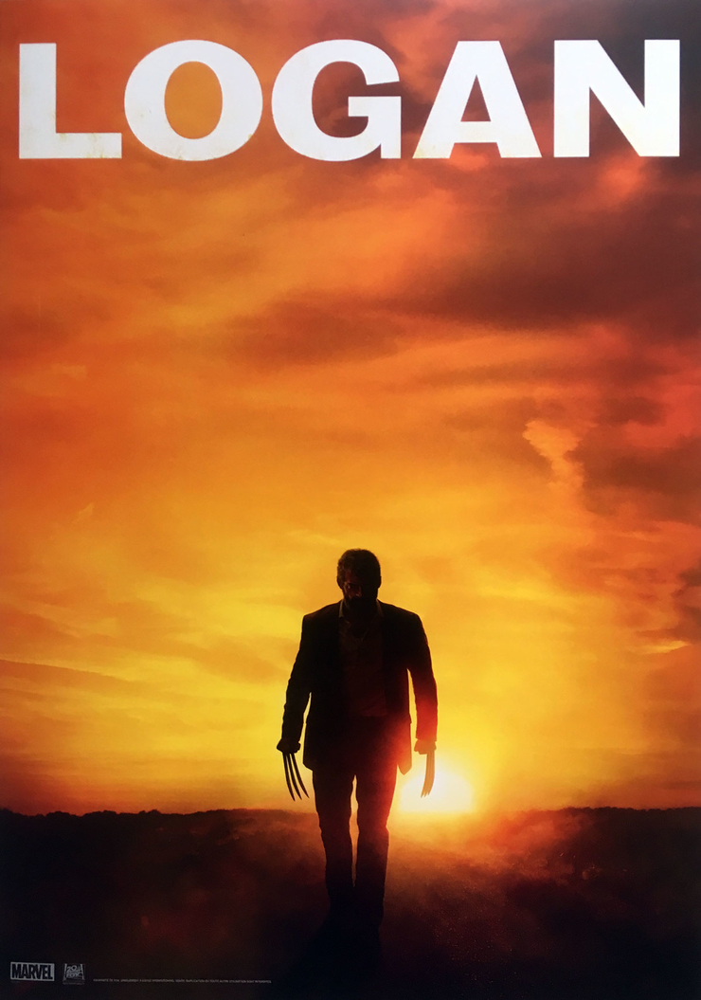
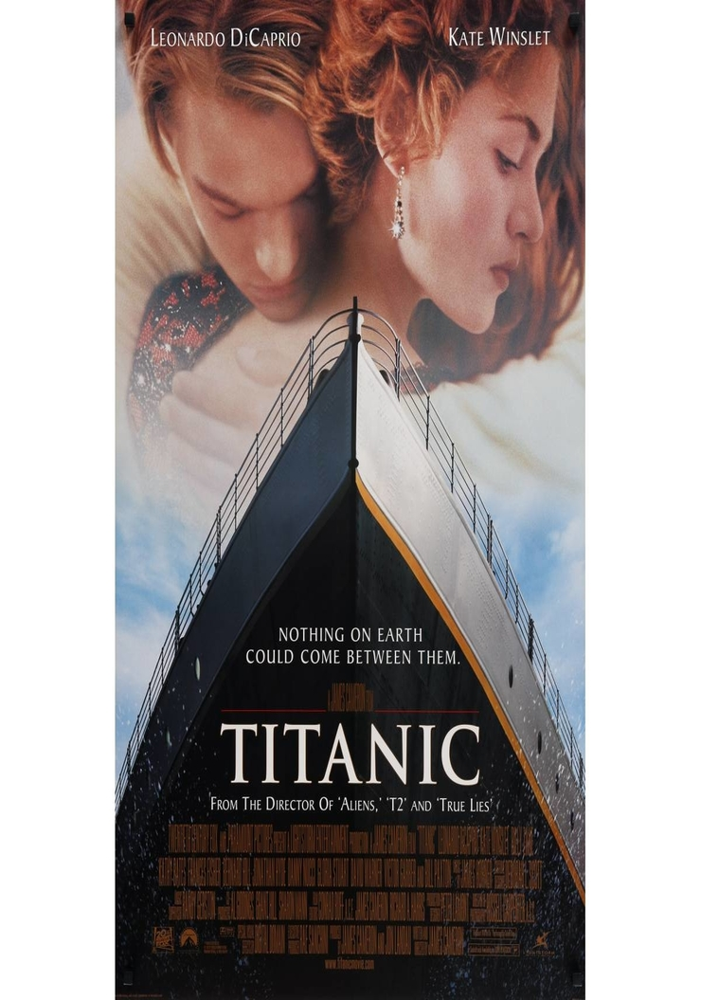
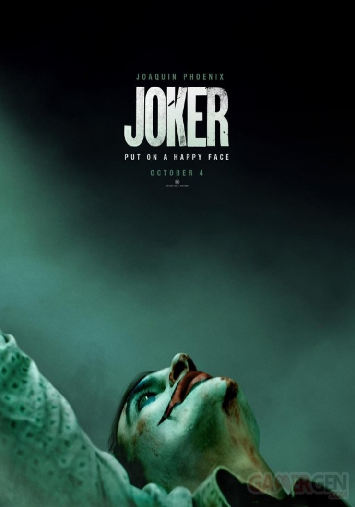
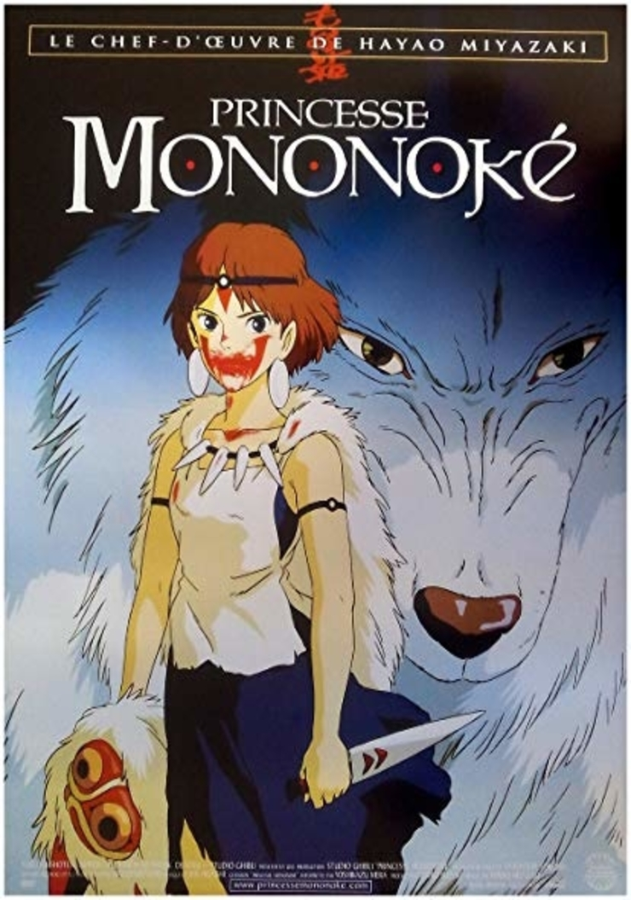
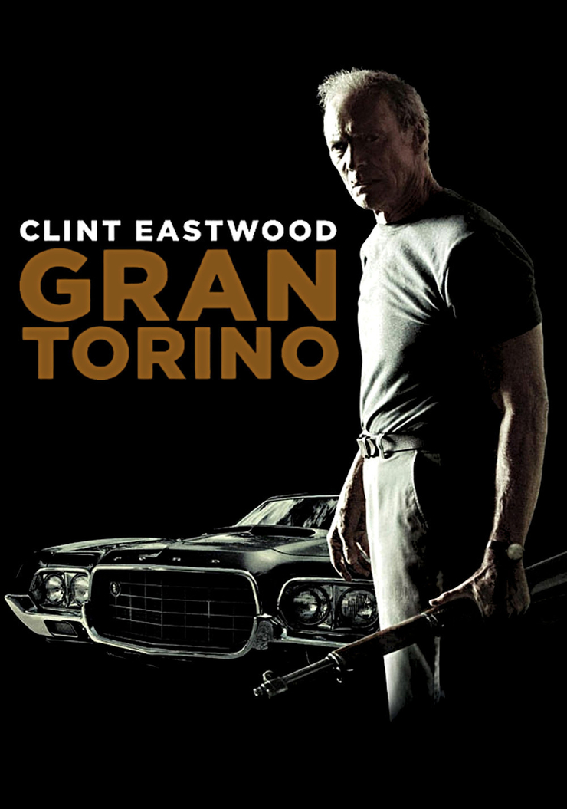

Les Films à l'affiche :
De tout pour vous
Films prévus le 05/08 :
Film 1 :
Her

Los Angeles, dans un futur proche. Theodore Twombly, un homme sensible au caractère complexe, est inconsolable suite à une rupture difficile. Il fait alors l'acquisition d'un programme informatique ultramoderne, capable de s'adapter à la personnalité de chaque utilisateur. En lançant le système, il fait la connaissance de 'Samantha', une voix féminine intelligente, intuitive et étonnamment drôle. Les besoins et les désirs de Samantha grandissent et évoluent, tout comme ceux de Theodore, et peu à peu, ils tombent amoureux…
Film 2 :
Your Name

Mitsuha, adolescente coincée dans une famille traditionnelle, rêve de quitter ses montagnes natales pour découvrir la vie trépidante de Tokyo. Elle est loin d'imaginer pouvoir vivre l'aventure urbaine dans la peau de... Taki, un jeune lycéen vivant à Tokyo. À travers ses rêves, Mitsuha se voit littéralement propulsée dans la vie du jeune garçon. Quel mystère se cache derrière ces rêves étranges qui unissent deux destinées que tout oppose et qui ne se sont jamais rencontrées ?
Film 3 :
Logan

Dans un futur proche, un certain Logan, épuisé de fatigue, s'occupe d'un Professeur X souffrant, dans un lieu gardé secret à la frontière Mexicaine. Cependant, les tentatives de Logan pour se retrancher du monde et rompre avec son passé vont s'épuiser lorsqu'une jeune mutante traquée par de sombres individus va se retrouver soudainement face à lui.
Films prévus le 06/08 :
Film 1 :
Titanic

En 1997, l'épave du Titanic est l'objet d'une exploration fiévreuse, menée par des chercheurs de trésor en quête d'un diamant bleu qui se trouvait à bord. Frappée par un reportage télévisé, l'une des rescapés du naufrage, âgée de 102 ans, Rose DeWitt, se rend sur place et évoque ses souvenirs. 1912. Fiancée à un industriel arrogant, Rose croise sur le bateau un artiste sans le sou.
Film 2 :
Mon voisin Totoro

Deux petites filles, Mei, 4 ans, et Satsuki, 10 ans, s'installent dans une grande maison à la campagne avec leur père pour se rapprocher de l'hôpital où séjourne leur mère. Elles découvrent la nature tout autour de la maison et, surtout, l'existence de créatures merveilleuses, les Totoros, avec qui elles deviennent très amies.
Film 3 :
Joker

Dans les années 1980, à Gotham City, Arthur Fleck, un comédien de stand-up raté est agressé alors qu'il ère dans les rues de la ville déguisé en clown. Méprisé de tous et bafoué, il bascule peu à peu dans la folie pour devenir le Joker, un dangereux tueur psychotique.
Films prévus le 07/08 :
Film 1 :
Le Parrain

En 1945, à New York, les Corleone sont une des 5 familles de la mafia. Don Vito Corleone, `parrain' de cette famille, marie sa fille à un bookmaker. Sollozzo, `parrain' de la famille Tattaglia, propose à Don Vito une association dans le trafic de drogue, mais celui-ci refuse. Sonny, un de ses fils, y est quant à lui favorable. Afin de traiter avec Sonny, Sollozzo tente de faire tuer Don Vito, mais celui-ci en réchappe.
Film 2 :
Princesse Mononoké

Ashitaka, un jeune guerrier japonais, affronte un sanglier géant et furieux qui attaque son village. Il tue la bête, mais se retrouve atteint par un mal mystérieux. Sur le conseil des sages, il part vers l'Ouest, à la recherche de ce qui a transformé l'animal en démon. Au cours de son périple, il rencontre San, une jeune fille qui vit avec les loups. Ashitaka apprend que les humains sont à l'origine de tous ces maux, car ils détruisent la forêt, qu'ils exploitent pour alimenter leurs forges.
Film 3 :
Man of Steel
Un petit garçon découvre qu'il possède des pouvoirs surnaturels et qu'il n'est pas né sur Terre. Plus tard, il s'engage dans un périple afin de comprendre d'où il vient et pourquoi il a été envoyé sur notre planète mais il devra devenir un héros s'il veut sauver le monde de la destruction totale et incarner l'espoir pour toute l'humanité.
Films prévus le 08/08 :
Film 1 :
Gran Torino

Walt Kowalski, un vétéran de la guerre de Corée, vient de perdre sa femme. Seul, misanthrope, bougon et raciste, il veille jalousement sur sa Ford Gran Torino, râlant sans cesse contre les habitants de son quartier, en majorité d'origine asiatique. Un jour, son jeune voisin, Tao, tente de lui voler sa voiture sous la pression d'un gang. Walt s'aperçoit bientôt que l'adolescent est littéralement harcelé par les jeunes caïds. Prenant la défense de Tao, Walt devient malgré lui le héros du quartier.
Film 2 :
Vice-Versa
Au Quartier Général, le centre de contrôle situé dans la tête de la petite Riley, 11 ans, cinq émotions sont au travail. À leur tête, Joie, débordante d'optimisme et de bonne humeur, veille à ce que Riley soit heureuse. Peur se charge de la sécurité, Colère s'assure que la justice règne, et Dégoût empêche Riley de se faire empoisonner la vie - au sens propre comme au figuré. Quant à Tristesse, elle n'est pas très sûre de son rôle.
Film 3 :
Avatar

Malgré sa paralysie, Jake Sully, un ancien marine immobilisé dans un fauteuil roulant, est resté un combattant au plus profond de son être. Il est recruté pour se rendre à des années-lumière de la Terre, sur Pandora, où de puissants groupes industriels exploitent un minerai rarissime destiné à résoudre la crise énergétique sur Terre.